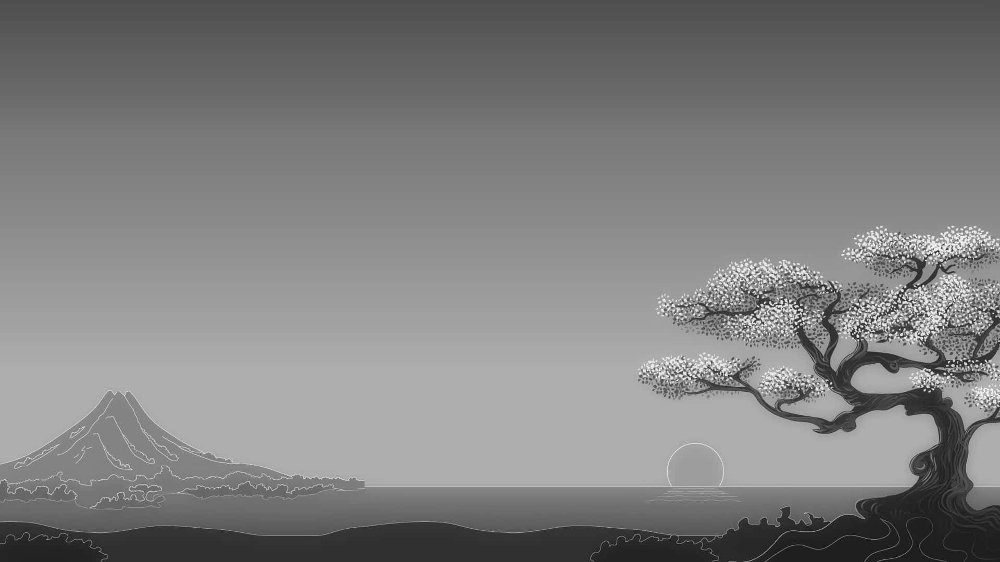

Desafio Prático do Modúlo 5
To-do List
- Adicione uma imagem à sua página HTML usando o atributo src e forneça uma
descrição com o atributo alt
- Estilize a imagem para ter 400px de largura e
altura proporcional usando CSS.
-
Crie um link para uma página externa (por
exemplo, https://www.google.com) e um link para uma página interna chamada
contato.html
- Adicione âncoras à sua página para criar links internos que
navegam para diferentes seções da página.
- Crie um link que usa uma imagem
como elemento clicável, e adicione atributos target=_blank" e title para o
link.
Sobre Mim
Meu nome é Caio de Medeiros Trindade... e tenho 19 anos
E esse é meu wallpaper do momento:

Ir para a página de contato